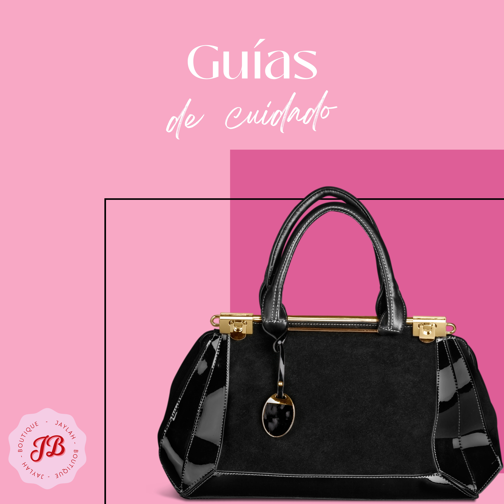

Cuidados

M A T E R I A L E S
- Crema de cuero
- Paño Limpio
- Lavadora
- Cepillo de gamuza
- Secadora
- Consérvelo en su funda original de algodón (la misma con la que se lo vendieron) e introduzca en su interior relleno de papel para mantener su forma. Pero nunca papel de periódico o de revista (no los escribimos para eso), ya que podrían dejar mancha. Tampoco meta el bolso de piel en una de esas bolsas de plástico para almacenar en vacío, pues no le permitiría respirar.
- Guárdelo en un lugar seco y oscuro y no lo exponga directamente a la luz del sol, que podría desgastar su color.
- Si guarda el bolso en un trastero con humedad, airéelo cada cierto tiempo (cada dos semanas, por ejemplo) para detener el posible crecimiento de moho. Y no tire las pequeñas bolsas de gel de sílice que suele incorporar el fabricante; impiden que el bolso se humedezca.
- Emplee un paño de algodón seco para eliminar el polvo de la superficie.
- Procure no manipular el bolso con las manos sucias o después de habérselas embadurnado con alguna crema.
- No lo llene como si nunca fuera a regresar a casa (a menos que sea un fugitivo de la justicia). Podría romper las asas del bolso o deformarlo.


© 2023. Derechos reservados.
Desarrollado por: Deissy Janeth Bibiano Murillo Matricula: 02010477
Plantel Nueva Tijuana